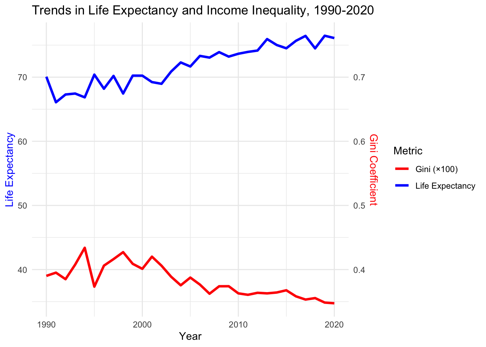
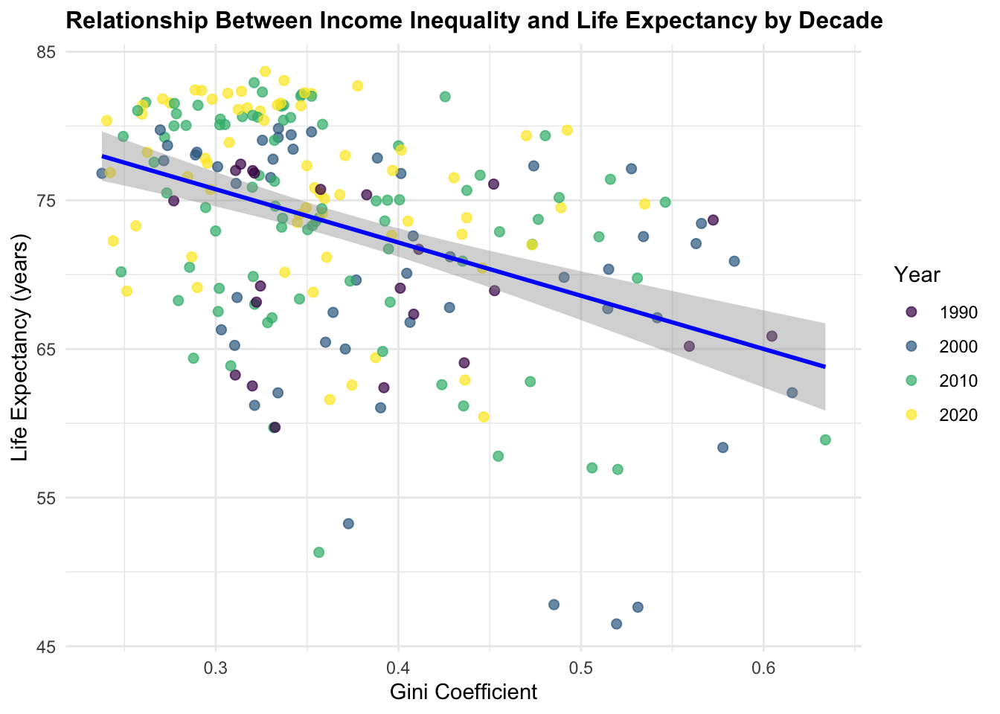

| Mean_Life_Expectancy | SD_Life_Expectancy | Mean_Gini | SD_Gini |
|---|---|---|---|
| 72.81685 | 7.835837 | 0.3756492 | 0.0881552 |
The Relationship Between Life Expectancy and the Gini Coefficient
Executive summary:
This study examines the relationship between income inequality and life expectancy across nations from 1990 to 2020 using World Bank and Our World in Data sources. Our analysis reveals a negative correlation between income inequality (measured by the Gini coefficient) and life expectancy, with more equitable societies generally experiencing longer life spans.
While global life expectancy has increased over the study period, the persistence of high inequality in certain regions continues to correspond with lower life expectancy outcomes. These findings suggest that addressing income inequality could be an important factor in improving population health outcomes.
Introduction:
The gap between rich and poor has become a defining challenge of our time, with potential implications for population health that extend far beyond economic considerations. While medical advances and improved living standards have generally increased life expectancy worldwide, the benefits of these improvements are not equally distributed. Recent studies suggest that the degree of income inequality within a society may play a crucial role in determining health outcomes.
Our investigation aims to contribute to the ongoing debate about whether more equitable societies tend to be healthier societies, and what this might mean for public policy. Understanding these patterns is essential for policymakers seeking to improve both economic and health outcomes in their communities.
Research Question
Primary Research Question:
- What is the relationship between income inequality and life expectancy across different countries between 1990-2020?
Secondary Research Questions:
How has the correlation between income inequality and life expectancy changed over the three-decade period?
Do countries with similar Gini coefficients show comparable life expectancy patterns regardless of their geographical location?
Methodology:
To investigate the relationship between income inequality and life expectancy, we analyzed data from two primary sources: life expectancy data from Our World in Data and Gini coefficient data from the World Bank. The analysis focused on the period from 1990 to 2020, covering multiple countries worldwide.
The Gini coefficient, ranging from 0 to 1, measures income inequality within countries, where 0 represents perfect equality and 1 represents maximum inequality. Life expectancy at birth represents the average number of years a newborn would live under current mortality rates.
We performed the following data processing and analysis steps:
Data cleaning by removing missing values and standardizing country names
Merging the datasets based on country and year
Computing summary statistics and correlation analysis
Creating visualizations to examine relationships and trends
The cross-sectional analysis examined the relationship between life expectancy and Gini coefficient at select years. The longitudinal analysis tracked changes in both variables across time.
Table and Figure References:
As shown in Table 1, the average life expectancy was 72.82 years (SD = 7.84), and the average Gini coefficient was 0.38 (SD = 0.09), reflecting substantial variability across countries.
Figure 1 illustrates trends over time, showing a steady increase in life expectancy and a mild decline in income inequality from 1990 to 2020.

Results:
Our results demonstrate a negative correlation between income inequality and life expectancy (r = -0.45). Countries with higher Gini coefficients tend to have lower life expectancy.
Over the 30-year period, life expectancy increased globally from approximately 70 years in 1990 to 76 years in 2020. Meanwhile, income inequality slightly declined, with the average Gini coefficient decreasing from 0.39 to 0.35.
Figure 2 presents cross-sectional snapshots by decade. The scatter plots show a persistent negative relationship across time points, supporting the association between inequality and health outcomes.
Notably, countries with Gini coefficients below 0.3 generally achieved life expectancies above 80 years, while nations with coefficients above 0.45 frequently had life expectancies under 70 years.
The relationship remained consistent across decades, though the strength of the correlation varied by region and development level. This suggests that while income inequality is an important factor in life expectancy, other variables likely play significant roles in determining population health outcomes.

Discussion, conclusion and recommendations
We have discussed the relationship between the gini-coefficient and life expectations. We conclude that the two variables have negative relations, A negative correlation between life expectancy and the Gini coefficient means that, on average, countries (or regions) with greater income inequality tend to have shorter lifespans. The main channels driving this relationship are:
- Unequal Access to Resources
Healthcare: Wealthier individuals can afford higher-quality care, preventive screenings, and insurance, while poorer people may delay or forgo treatment due to cost.
Nutrition & Living Conditions: Affluent households can buy healthier food and live in cleaner, less crowded environments; low-income families face greater exposure to pollution, overcrowding, and food insecurity.
- Psychosocial Stress and Social Capital
Chronic Stress: Large income gaps fuel social comparison and status anxiety, triggering persistent stress responses that harm cardiovascular, immune, and endocrine systems.
Weakened Community Bonds: High-inequality societies often exhibit lower trust and mutual support, reducing the informal networks that share health information and provide neighborhood‐level care.
- Underinvestment in Public Health and Welfare
Weak Redistribution: When tax, welfare, and public services disproportionately benefit the well-off, funding for universal healthcare, elder care, and child health programs suffers—limiting gains in overall longevity.
Education Gaps: Education strongly influences health literacy and behaviors; in unequal societies, lower-educated groups lack knowledge about disease prevention and healthy lifestyles, increasing chronic‐disease risks.
- Cumulative and Intergenerational Effects
Early-Life Disadvantages: Childhood poverty—malnutrition, exposure to toxins, or family financial stress—can stunt physical and cognitive development, with effects that persist into adulthood.
Limited Social Mobility: In highly unequal settings, children from poor families have fewer opportunities to escape poverty, perpetuating health disadvantages across generations.
In summary, higher Gini coefficients signal deeper divides in income, opportunity, and social support. These divides translate into unequal healthcare, nutrition, education, and chronic stress—together driving down average life expectancy. Policies that reduce inequality (stronger redistribution, universal health coverage, and investments in education and social services) therefore play a key role in boosting population health and longevity.
References:
De Vogli, R., Mistry, R., Gnesotto, R., & Cornia, G. A. (2005). Has the relation between income inequality and life expectancy disappeared? Evidence from Italy and top industrialised countries. Journal of Epidemiology & Community Health, 59(2), 158–162. https://doi.org/10.1136/jech.2004.020651 ResearchGate
Preston, S. H. (1975). The changing relation between mortality and level of economic development. Population Studies, 29(2), 231–248. JSTOR
Hazan, M. (2012). Life expectancy and schooling: new insights from cross‐country data. Journal of Population Economics, 25, 1237–1248. https://doi.org/10.1007/s00148-011-0392-6 SpringerLink
Jaba, E., Bălan, C. B., & Robu, I.-B. (2014). The relationship between life expectancy at birth and health expenditures estimated by a cross‐country and time‐series analysis. Procedia Economics and Finance, 15, 108–114. DergiPark
Tripathi, S., & Maiti, M. (2023). Does urbanization improve health outcomes: a cross country level analysis. Asia‐Pacific Journal of Regional Science, 7, 277–316. https://doi.org/10.1007/s41685-022-00268-1 SpringerLink